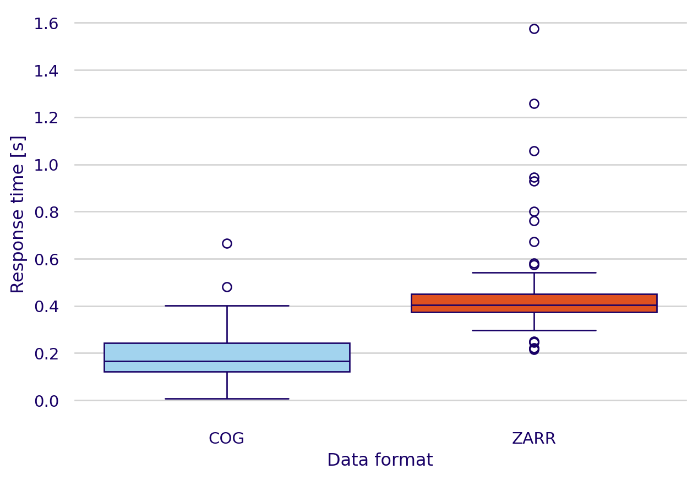
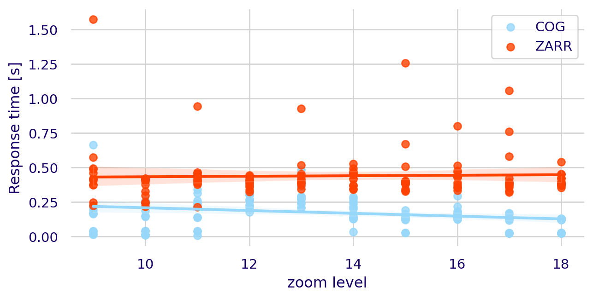

Cataloguing and visualizing big Geodata
Final report
Executive summary
List of abreviations
| Abreviations | Description |
|---|---|
| EUDR | European Union Deforestation Regulation |
| STAC | Spatio-Temporal Asset Catalog |
| COG | Cloud-Optimized GeoTiff |
| OGC | Open Geospatial Consortium |
| SDI | Spatial Data Infrastructure |
| S11 | Satelligence |
| K8 | Kubernetes |
| DPROF | Distributed Processing Framework |
| JSON | JavaScript Object Notation |
| API | Application Programming Interfaces |
| HTTP | HyperText Transfer Protocol |
| SQL | Standard Query Language |
| FBL | Forest Baseline |
| DEM | Digital Elevation Map |
| TCA | Thematic Content analysis |
| VRT | Vitual Raster |
Introduction
Internship organization background
Satelligence (S11) is a company founded in 2016 that specializes in providing satellite-based actionable information by monitoring environmental risks in commodity supply chains and financial investment planning (Satelligence, n.d.). More specifically, the company processes terabytes of satellite imagery to detect environmental risks and presents this information to their clients in a web application to assist them in the migration towards more sustainable sourcing models and the compliance with deforestation-free commodities regulations, such as the European Union Deforestation Regulation (EUDR) (Satelligence, 2023). S11’s main focus is continuous deforestation monitoring (CDM) in the tropics using freely accessible satellite imagery. This is a data-intensive task that is achieved by leveraging the benefits of cloud computing, specifically Google Cloud Platform.
Context and justification of research
Satelligence strongly relies on cloud computing for their services. They process extensive volumes of satellite imagery amounting to terabytes using DPROF, a distributed processing framework created within the company to efficiently process multidimensional spatial datasets. While this processing workflow currently runs smoothly, the company’s data and operations teams face challenges when going deeper into the analysis and accessing intermediate results due to the big nature of this data (Satelligence, 2023). Scholars have defined big data as datasets characterized by their high Volume, Velocity, and Variety, which makes it paramount to use advanced processing and analytics techniques to derive relevant insights (Giri and Lone, 2014). In the specific case of Satelligence, their datasets can be categorized as big data due to their: High volume (Terabytes of satellite images processed every day), high velocity (Near – real time processing of these images) and high variety (Imagery coming from different sensors and regions). All these datasets are a specific case of big data: Big Geodata.
Significance of the topic and previous research
In the past decades there has been a rapid increase in the amount and size of geo-spatial information that can be accessed. Nowadays, more than 150 satellites orbit the earth collecting thousands of images every single day (Zhao et al., 2021). This has made data handling and the introduction of spatial data infrastructures (SDIs) paramount when working with such big datasets.
Traditionally, SDIs have served to ease the accessibility, integration and analysis of spatial data (Rajabifard and Williamson, 2001). However, in practice SDIs have been built upon technologies that focus on data preservation rather than accessibility (Durbha et al., 2023). Due to this, an important shift is underway towards more cloud-based SDIs (Tripathi et al., 2020). These platforms need the emergence of new technologies that prioritize seamless access to cloud-stored data, efficient discovery services that ensure the easy location of extensive spatial data, and data visualization interfaces where multiple datasets can be depicted.
Cloud-based data storage
Spatial data, just like any other type of data, can be cataloged into structured and unstructured data. Structured datasets are often organized and follow a specific structure (i.e. A traditional table with rows (objects) and columns (features)). On the other hand, unstructured data does not have a predefined structure (e.g. Satellite imagery and Time series data) (Mishra and Misra, 2017). The management of structured data has witnessed substantial advancements, making it straightforward to handle it systematically using, for instance, relational databases (i.e. With the help of Structured Query Language (SQL)) (Kaufmann and Meier, 2023). In contrast, due to the additional challenges associated with the handling of unstructured data, the developments in this area have taken a longer time to appear.
The emergence of cloud-based archives has been one of the main advancements for unstructured data management during the last decades. In the specific case of geo-spatial data, it has allowed to store terabytes of unstructured data (i.e. Satellite imagery) on the cloud and access it through the network. However, the necessity transmitting data across networks to access it makes it essential to develop new data formats suited for such purposes (Durbha et al., 2023).
At S11, the storage of large geo-spatial data is already managed using Google Storage Buckets, and they are currently in the process of incorporating the conversion to cloud-optimized data formats like Cloud Optimized GeoTIFFs (COGs) and Zarrs in their processing framework (DPROF) to improve efficiency and accessibility.
Cloud-optimized data formats
COG
Cloud-Optimized GeoTIFFs (COGs) are an example of data formats that have been created to ease the access of data stored in the cloud. They improve the readability by including the metadata in the initial bytes of the file stored, storing different image overviews for different scales and tiling the images in smaller blocks. These characteristics make COG files heavier than traditional image formats. However, they also greatly enhance accessibility by enabling the selective transfer of only the necessary tiles using HTTP GET requests (Desruisseaux et al., 2021). Additionally, this data format has been adopted as an Open Geospatial Consortium (OGC) standard. These standards are a set of guidelines and specifications created to facilitate data interoperability (OGC, 2023).
Zarr
Another cloud native data format that has gained popularity recently is Zarr. This data format and python library focuses on the cloud-optimization of n-dimensional arrays. Zarr, differently than COGs store the metadata separately from the data chunks using lightweight external JSON files (Durbha et al., 2023). Additionally, this data format stores the N-dimensional arrays in smaller chunks that can be accessed more easily. While the storage of Zarr files in chunks facilitates more efficient data access, the absence of overviews hinders the visualization of this data in a web map service (Desruisseaux et al., 2021). Due to the increasing use of Zarr for geo-spatial purposes, the OGC endorsed Zarr V2 as a community standard. Nevertheless, efforts are still being made to have a geo-spatial Zarr standard adopted by OGC (Chester, 2024).
Data discovery services
A discovery service that recently has become widely used for the exploration of big geo-data is Spatio-Temporal Asset Catalog (STAC). Through the standardization of spatio-temporal metadata, STAC simplifies the management and discovery of big geo-data (Brodeur et al., 2019). This service works by organizing the data into catalogs, collections, items, and assets stored as lightweight JSON formats (See Table 1) (Durbha et al., 2023).
Moreover, there are two types of STAC catalogs: static and dynamic. Static catalogs are pre-generated and stored as static JSON files on a cloud storage. Static catalogs follow sensible hierarchical relationships between STAC components and this feature makes it easy to be browsed and/or crawled by. Nevertheless, these catalogs cannot be queried. On the other hand, dynamic catalogs are generated as applications that respond to queries dynamically. Notably, dynamic catalogs will show different views of the same catalog depending on queries which usually focus on the spatio-temporal aspect of the data (RadiantEarth, 2024).
| STAC components | Description |
|---|---|
| Assets | An asset can be any type of data with a spatial and a temporal component. |
| Items | An item is a GeoJSON feature with some specifications like: Time, Link to the asset (e.g. Google bucket) |
| Collections | Defines a set of common fields to describe a group of Items that share properties and metadata |
| Catalogs | Contains a list of STAC collections, items or can also contain child catalogs. |
In the specific case of dynamic catalogs, the concept of STAC API is widely used. In general, an API is a set of rules and protocols that enables different software applications to communicate with each other (Clark, 2020). In the case of the STAC API, it provides endpoints for searching and retrieving geo-spatial data based on criteria such as location and time, delivering results in a standardized format that ensures compatibility with various tools and services in the geo-spatial community. Moreover, even though STAC API is not an OGC standard or an OGC community standard, the basic requests performed in a STAC API adheres to the OGC API-Features standards for querying by bounding box and time range, returning GeoJSON-formatted results that conform to both STAC and OGC specifications. Ultimately, compared to OGC API-Features, STAC API enhances functionality by providing additional features that users needed (e.g. cross-collection search, versioning) (Holmes, 2021).
To facilitate easy browsing of both static and dynamic STAC catalogs, STAC Browser was created. This web-application provides a user-friendly interface to search, visualize, and, in the case of dynamic catalogs, query assets within a catalog.
Visualization interfaces
The visualization of spatial data brings with it a series of challenges due to its big nature. Dynamic tiling libraries such as TiTiler have tackled multiple of these challenges by creating APIs that dynamically generate PNG/JPEG image tiles when requested without reading the entire source file into memory (TiTiler, n.d.). This feature optimizes rendering of images since PNG and JPEG image file formats are more easily transferred through the web.
TiTiler supports various data structures including STAC (SpatioTemporal Asset Catalog), Cloud Optimized GeoTIFFs (COGs), and is currently working on adding support for Zarrs. For the first two, the TiTiler PgSTAC specialized extension integrates with PostgreSQL to enhance STAC catalog querying capabilities. For the case of Zarrs, the TiTiler-Xarray extension is being developed to facilitate the visualization of multidimensional data arrays.
Cloud services
Cloud services facilitate the seamless integration of multiple services, such as the data visualization interfaces and data discovery services described before. Nevertheless, there is not a one fit all cloud solution that will always work efficiently. For instance, different cloud providers like Amazon Web Services or Google Cloud Platform (GCP) offer different tools that may offer different performances based on parameters like latency or scalability. Choosing the correct cloud service or set of services for the integration of data discovery and data visualization tools remains paramount.
Added value of this research
This research aims to identify efficient solutions for the company’s current challenges in discovering and visualizing large geo-spatial datasets by integrating cloud-optimized data formats, cloud services, STAC specifications, and dynamic tiling services. The outcomes of this research will: offer valuable insights into the existing data discovery challenges within the company, propose a methodology for integrating discovery and visualization services, and evaluate the effectiveness of dynamic tiling for various cloud-optimized data formats.
Research questions
- What are the current challenges, practices, and user experiences related to data discovery and data visualization in the company?
- How can cloud-optimized data formats, cloud services and SpatioTemporal Asset Catalog (STAC) specifications be integrated to enhance the process and experiences of discovering big spatial data within the company?
- To what extent do dynamic tiling services perform in visualizing different cloud-optimized data formats?
Methodology
To answer the research questions presented a series of tasks were undertaken. These tasks are presented in the following subsections where they are divided by research question.
Baseline scenario
The baseline scenario was defined as the set of methods currently being used by members of different teams at Satelligence to find, retrieve and visualize spatial data. This baseline scenario was evaluated qualitatively by interviewing four members of two different teams in the company (i.e. the data and the operations team). To keep a balance regarding experience of the study subjects, both the newest member of each team and a member with at least three years in the company were interviewed.
The questions asked during the interviews were oriented towards two main topics that were covered during this internship: Spatial data discovery and spatial data visualization. For both topics, the questions were divided into questions related to raster and vector datasets. The questions included in the interview can be found in Section 5.1 and were meant to be open questions with multiple possible answers.
Furthermore, based on the answers of the interviewees a flowchart was built to represent visually the traditional steps performed to discover and visualize S11 data. This visual representation included estimations of the steps where more time was spent on.
Finally, the answers to the questionnaire were analyzed qualitatively following a Thematic Content Analysis (TCA). This type of qualitative analysis focuses on finding common themes in the interviews undertaken (Anderson, 2007). The extraction of common patterns within the interviews was initially done using a large language model (i.e. Chat-GPT 3.5 (OpenAI, 2023)) using the prompt presented on Section 5.2. Moreover, the themes identified were further refined based on the interviewer’s interpretation.
Data and service integration
To efficiently integrate tools for big geo-spatial data discovery and visualization, a series of steps had to be followed. Initially, the datasets were selected. Subsequently, the structure of the catalog was defined. Following this, a Git repository containing the code required to generate the catalog was created. Static JSON files were then utilized to construct a dynamic STAC API. Ultimately, this API was deployed alongside other services using a continuous integration (CI) and continuous deployment (CD) pipeline. A further explanation of each step is presented in the following subsections.
Dataset selection
Due to the desire of the company to continue moving towards a cloud-based workflow. The datasets that were considered for the catalog, were composed of either COGs or Zarrs. Nevertheless, since some of the data in the company is stored as virtual rasters (VRTs), methods to also index this type of data formats in the STAC catalog were included. Specifically, S11’s long term goal is to store in the catalog datasets that can be classified as follows:
- Static raster data
- Forest baselines (Stored as COGs)
- Third-party data (Stored as VRTs, Tiffs, or other formats)
- DPROF results
- Results of continuous deforestation monitoring (Stored as ZARRs)
- Other DPROF results
- Supply chain data (Vector data)
- Complaince data (Vector data)
Nevertheless, the scope of this internship was limited to raster datasets. Therefore, the creation of the catalog was done using a limited amount of raster layers and they were incorporated as a proof of concept of how the catalog could be created.
Proposed Catalog structure
The structure of the STAC catalog proposed can be seen on Figure 1. In it, a selection of datasets that should be referenced in the catalog is presented and a hierarchical structure composed of thematic collections is suggested. This structure was not followed in the creation of the proof-of-concept catalog, as the purpose of this catalog was only to demonstrate the process of creating it. The final version of the structure will be determined by the company.

S11-cats repository
The s11-cats repository created is composed of a module named cats which consists of five submodules described in Table 2. Moreover, an overview of the main workflow followed in the main function of s11-cats is presented on Figure 2.
| Submodule | Description |
|---|---|
| gcs_tools | Module with functions to interact with data stored at Google Cloud Storage |
| general_metadata | Module to extract general metadata for a STAC item. |
| get_spatial_info | Module to get all spatial information from assets. |
| get_temporal_info | Module with functions to extract temporal metadata of a dataset. |
| stac_tools | Module with the functions to initialize a STAC, add collections, items and assets to it. |
As observed, the code in the repository requires a dictionary containing collection titles, descriptions, and tags, along with a list of links for each item to be added to each collection. It then generates two JSON files: one storing the collections’ information and the other storing the items’ information. This decision to produce two JSON files was made to facilitate the transition from the static catalog that has been created to the dynamic catalog that is desired.
eoAPI + other services
Once a static catalog has been created, the next step involves developing the dynamic catalog by leveraging eoAPI (Sarago et al., 2024). eoAPI is a robust tool designed for managing, discovering and visualizing Earth observation data. It integrates several services that include indexing of large STAC collections and items using a Postgres database (See PgSTAC), creating a dynamic catalog that can query the Postgres database (See STAC API) and two additional services for visualizing raster (See Titiler-PgSTAC) and vector data (See TiPg).
eoAPI integrates all of these services by using containerized versions that are able to communicate seamlessly with each other. A container is a lightweight, standalone, and executable package of software that includes everything needed to run an application. Containerizing the services facilitates deployment to the cloud using Google Kubernetes Engine (GKE). Kubernetes is an open-source platform designed for automating the deployment, scaling, and management of containerized applications (Poulton, 2023). It offers various advantages, such as scalability, efficient resource utilization, and simplified maintenance, making it an ideal solution for managing the dynamic catalog and the integrated services in a cloud environment.
Since the current version of eoAPI does not include some extra services that were necessary to deploy, a separate containerized version of these services was deployed in the same K8 cluster. Notably, a version of STAC Browser and TiTiler-Xarray to browse the catalog created and visualize Zarr datasets respectively.
CI/CD pipeline
Finally, a gitlab CI/CD pipeline was created to automate the creation of the catalog using the s11-cats repository, the deployment of eoAPI and extra services and the ingestion of the catalog into the deployed version of the dynamic catalog.
Comparison with baseline scenario
Once a version of all of the services integrated was deployed online, the ease of discovery and visualization was again qualitatively analyzed by evaluating the steps processed for both finding and visualizing S11 data. These steps were then represented in a flowchart that could be compared to the one created on Section 2.1.
Multi-format data visualization
To assess the performance of dynamic tiling services for visualizing Cloud Optimized GeoTIFFs (COGs) and Zarr data formats, the following approach was undertaken. Firstly, a COG containing forest baseline information for the Riau region of Indonesia was used to create a series of Zarr files, each representing different overviews corresponding to various zoom levels. This pre-processing step, completed by the company prior to the study, ensured that the same data was used across both data formats, allowing for direct comparison. Then, the TiTiler-Xarray service was then customized to work with the specific folder structure of the ZARR overviews previously created. Moreover, containerized versions of both TiTiler-Xarray (for Zarr files) and TiTiler-PgSTAC (for COG files) were deployed. The performance was measured by recording the response times for random tile requests at zoom levels ranging from 9 to 18. Finally, to mitigate the influence of cached data on response times, each iteration used a different colormap, with a total of twelve colormaps employed. This methodology enabled a systematic evaluation of the performance differences between the two data formats in a geo-spatial data visualization context.
Speed up
The performance of both TiTiler services to dynamically create tiles for the different data formats was evaluated using the Speed Up metric proposed in Durbha et al. (2023) (Equation 1). In this case, the Speed Up explains how much did the process of requesting tiles sped up by using a data format A compared to using a data format B.
\[ SpeedUp = \frac{t_{format A}}{t_{format B}} \tag{1}\]
Zoom level influence
Finally, the effect of the level of zoom in a web map visualization on the response times of requesting tiles from the different tiling services was evaluated by fitting an Ordinary Least Squares (OLS) univariate linear regression that followed Equation 2.
\[ ResponseTime = \beta_1 \cdot ZoomLevel + \beta_0 + \epsilon \tag{2}\]
Results & Discussion
Baseline scenario
Current workflow
One of the main findings of the interviews was the process followed currently to discover, retrieve and visualize data. These steps are summarized on Figure 3 and show how complex and time consuming these tasks can be for a Satelligence employee nowadays. Moreover, the steps followed were categorized in four classes depending on how much time is generally spent carrying it out.

According to Figure 3, some of the most time-consuming tasks were searching for data on Google Cloud Storage and downloading it for visualization. Additionally, seeking advice from colleagues about the dataset’s location added significant uncertainty to the time estimates, as responses varied from very quick to considerably delayed or non existent.
Thematic Content Analysis
When asked about the recurrent patterns on the interviews undertaken to define the baseline scenario, ChatGPT found four main topics:
- There is a high uncertainty on the location of datasets and a high dependency on colleagues to find them.
- Multiple sources and locations of data.
- Data familiarity helps users locate data quicker.
- Use of specific tools and methods for different datasets.
After some refinement and a deeper analysis of the interviews, the major pitfalls found on the process of data discovery and visualization in the company were summarized as follows:
- High dependency on colleagues for dataset location.
- Disorganized structure of Google Storage Buckets.
- Data familiarity helps users locate data quicker.
- Data location is dependent on recurrent work with a specific dataset.
- Not intuitive naming of repositories with datasets.
- Understanding of diverse tools to access different data is currently necessary.
- Download of data is required in most cases to visualize it.
- Not one place where all existing data can be found.
All of these pitfalls highlight the need for a simpler data discovery implementation, where data visualization can also be integrated seamlessly. This approach should allow for easy access to datasets based on specific queries.
All of these pitfalls highlight the need for a simpler data discovery implementation, where data visualization can also be integrated seamlessly. Previous studies have found that key difficulties for earth observation data discovery include heterogeneous query interfaces, and use of diverse metadata models (Miranda Espinosa et al., 2020). Addressing these challenges, a streamlined approach should enable easy access to datasets based on specific queries, ensuring that users can efficiently locate and utilize the data they need. By harmonizing metadata standards and query protocols, the process of data discovery can be greatly improved, making it more accessible and user-friendly.
Service integration
The integration of the services deployed resulted in a version of STAC Browser including three different collections containing datasets related to the forest baseline created by the company, elevation data from third party organizations and a collection for the comparison of COG and Zarr data. The web application can be accessed in https://eoapi.satelligence.com/browser.
Effective integration
The effective integration was not an easy task and involved multiple aspects, ranging from editing data formats to facilitate their visualization, transitioning from a static to a dynamic catalog, customizing APIs, and finalizing with the correct deployment of the services.
Data formats
An essential step related to data formats was the edition of Zarr datasets to achieve their optimal visualization. This edition involved creating a series of overviews of the same dataset at different resolutions. Specifically, this was accomplished by converting Cloud Optimized GeoTIFFs (COGs) into multiple Zarr files resampled at various spatial resolutions. These resampled Zarr files, acting as overviews enhance visualization by allowing the appropriate resolution to be accessed based on the map scale, similar to the approach used when visualizing COGs (Lynnes et al., 2020). Even though the approach followed in this study allowed for improved visualization of Zarr files, the creation of Zarr pyramids in a more optimized way is still necessary. Other researchers have been focusing their efforts on this task to enhance the efficiency and effectiveness of the process (Barciauskas et al., 2024).
Leverage of APIs
To effectively query the datasets stored in the catalog, a transition from a static to a dynamic catalog (i.e. a STAC API) was needed. This shift was facilitated by the deployment of a STAC API within the eoAPI framework. The STAC API possibilitated the querying capabilities of the datasets stored in the catalog by dynamically requesting datasets based on their metadata. This dynamic setup not only facilitated data discovery but also enabled the use of additional tools such as the STAC API QGIS plugin. The plugin could simplify the process of data discovery and its direct manipulation.
For the visualization of Zarr datasets, it was necessary to customize the TiTiler-Xarray API to accommodate the new Zarr pyramid structure. This customization involved overwriting a series of functions in the main code of the application to align with the newly created Zarr pyramids. By adapting the API to handle the specific requirements of the Zarr format and its multi-resolution overviews, the visualization process was optimized.
Deployment
As described on Section 2.2.4, the deployment of both eoAPI and the additional services utilized was perform using Google Kubernetes Engine (GKE), which is K8s’ GCP service. In a GKE cluster, the setup of complex multi-service applications that connect to each other with an internal network is simplified (Gupta et al., 2021). Moreover, eoAPI simplified the deployment by providing a guide for deployment that used a Helm chart. A Helm chart is a collection of files that describe the K8s related resources needed to run a multi-service application and it can improve the speed of deployment by a factor of up to 6 times (Gokhale et al., 2021). These factors greatly influenced the decision of deploying the whole suite of services in eoAPI.
Moreover, the performance of some of the eoAPI services deployed using K8s had been already assessed by previous studies. …
Additional to the simplification that eoAPI provided to deploy this using GKE and the Helm chart, we also went for that option because it had already been tested by other authors using large datasets and heavy load requests (Munteanu et al., 2024). Munteanu et al. (2024) perform tests with 2.3 TB of spatial data stored in S3 and a simulated simultaneous load of up to 7k users and their results showed good performance serving the data. (REVIEW)
Also the fact that it integrates other services that we are not using, but would come very handy in the near future for satelligence.
Compare with other ways in which this could have been done? Virtual Machine (Compute Engine)
discussion: - Vector visualization can be done in the future. - Authentication - stac extensions.
Workflow improvement
Once the deployment of eoAPI and the extra services was done, a new workflow for both the new data discovery and visualization tasks was designed and is presented on Figure 4. This new workflow shows a clear improvement on the speed and the ease of use of the new methods employed.

Moreover, it can be seen that with the new implementation most of the issues identified on the TCA were addressed. There is no longer a dependency on colleagues for locating datasets, as all data is now consolidated in one place. The disorganized structure of Google Storage Buckets is no longer a concern since the catalog can integrate data stored in multiple buckets into a single, cohesive STAC collection. The previous issue of non-intuitive naming conventions for data repositories, is resolved because it is unnecessary to know the data source once it is included in the STAC catalog. Furthermore, there is no longer a need to understand diverse tools for accessing different data; the STAC Browser facilitates querying collections and visualizing items. Finally, the STAC catalog serves as the centralized location for all data used in S11 workflows, which favours long term usability of code that relies on this data.
Performance of multi-format data visualization
Raster formats
The comparison of visualization speeds with TiTiler-xarray for Zarr datasets and TiTiler-PgSTAC for COGs are presented on Figure 5. In the figure it can be obesrved that COG tiles are requested 2.53 times faster than the same file in ZARR format.
Fine tuning of dataset creation
There are some GDAL parameters that can improve the tiling performance of TiTiler (See performnce_tuning). This should be taken into account in future dataset creation
Also how well
Effects of zoom level
As seen on Figure 6, the zoom level of the map will have an effect on the time spent requesting and getting a tile from a tile server. In this study, it was found that the request times decreased by -0.01 and 0.002 seconds per zoom level for COGs and ZARRs respectively.

Discussion
Range request of tiles in titiler-xarray is customized in a particular way. Nevertheless, other alternatives exist…
Check on how different cloud services providers might give different latencies when opening several files instead of only one. (Niklas mentioned)
Conclusions
References
Anderson, R. (2007). Thematic content analysis (TCA). https://rosemarieanderson.com/wp-content/uploads/2014/08/ThematicContentAnalysis.pdf
Barciauskas, A., Jones, M., Martin, K., Harkins, S. and Sarago, V. (2024). Next-Gen Zarr Web Map Visualization. EGU General Assembly Conference Abstracts, 11805. p. https://doi.org/10.5194/egusphere-egu24-11805
Brodeur, J., Coetzee, S., Danko, D., Garcia, S. and Hjelmager, J. (2019). Geographic information metadata—an outlook from the international standardization perspective. ISPRS International Journal of Geo-Information, 8(6), 280. p. https://doi.org/10.3390/ijgi8060280
Chester, S. (2024(e)ko Januaryk 18). OGC forms new GeoZarr standards working group to establish a zarr encoding for geospatial data. Open geospatial consortium. https://www.ogc.org/press-release/ogc-forms-new-geozarr-standards-working-group-to-establish-a-zarr-encoding-for-geospatial-data/
Clark, J. (2020). Application programming interface. https://www.semanticscholar.org/paper/Application-Programming-Interface-Clark/84f0b513a62a4f2bb09a899a128a231eccace22c
Desruisseaux, M., Giacco, G., Goncalves, P., Manente, M. and Rouault, E. (2021). OGC testbed 17: COG/zarr evaluation engineering report. https://docs.ogc.org/per/21-032.html#toc11
Durbha, S. S., Sanyal, J., Yang, L., S Chaudhari, S., Bhangale, U., Bharambe, U. and Kurte, K. (2023). Advances in scalable and intelligent geospatial analytics: Challenges and applications (1st ed.). CRC Press. https://doi.org/10.1201/9781003270928
Giri, K. and Lone, T. (2014). Big data -overview and challenges. International Journal of Advanced Research in Computer Science and Software Engineering, 4.
Gokhale, S., Poosarla, R., Tikar, S., Gunjawate, S., Hajare, A., Deshpande, S., Gupta, S. and Karve, K. (2021). Creating helm charts to ease deployment of enterprise application and its related services in kubernetes. 2021 International Conference on Computing, Communication and Green Engineering (CCGE), 1–5. pp. https://doi.org/10.1109/CCGE50943.2021.9776450
Gupta, M., Sanjana, K., Akhilesh, K. and Chowdary, M. N. (2021). Deployment of multi-tier application on cloud and continuous monitoring using kubernetes. 2021 5th International Conference on Electrical, Electronics, Communication, Computer Technologies and Optimization Techniques (ICEECCOT), 602–607. pp. https://doi.org/10.1109/ICEECCOT52851.2021.9707957
Holmes, C. (2021(e)ko Januaryk 19). SpatioTemporal asset catalogs and the open geospatial consortium. Radiant earth insights. https://medium.com/radiant-earth-insights/spatiotemporal-asset-catalogs-and-the-open-geospatial-consortium-659538dce5c7
Kaufmann, M. and Meier, A. (2023). Database management. In M. Kaufmann and A. Meier (Eds.), SQL and NoSQL databases: Modeling, languages, security and architectures for big data management (1–24. pp.). Springer Nature Switzerland. https://doi.org/10.1007/978-3-031-27908-9_1
Lynnes, C., Quinn, P., Durbin, C. and Shum, D. (2020). Cloud optimized data formats.
Miranda Espinosa, M. T., Giuliani, G. and Ray, N. (2020). Reviewing the discoverability and accessibility to data and information products linked to essential climate variables. International Journal of Digital Earth, 13(2), 236–252. pp. https://doi.org/10.1080/17538947.2019.1620882
Mishra, S. and Misra, A. (2017). Structured and unstructured big data analytics. 2017 International Conference on Current Trends in Computer, Electrical, Electronics and Communication (CTCEEC), 740–746. pp. https://doi.org/10.1109/CTCEEC.2017.8454999
Munteanu, A., Panica, S. and Iuhasz, G. (2024). On the performance of STAC-FastAPI and PgSTAC using a cloud-native deployment. In L. Barolli (Ed.), Advanced information networking and applications (191–200. pp.). Springer Nature Switzerland. https://doi.org/10.1007/978-3-031-57931-8_19
OpenAI. (2023). ChatGPT. https://chatgpt.com/
Poulton, N. (2023). The kubernetes book. Nigel Poulton Ltd.
Rajabifard, A. and Williamson, I. P. (2001). Spatial data infrastructures: Concept, SDI hierarchy and future directions. http://hdl.handle.net/11343/33897
Sarago, V., Deziel, Z., Tenezakis, E. and Goodman, L. (2024). Developmentseed/eoAPI [Software]. Development Seed. https://github.com/developmentseed/eoAPI
Satelligence. (n.d.). Home - satelligence - sustainability monitoring simplified. Satelligence. Retrieved February 5, 2024, from https://satelligence.com/
Satelligence. (2023). Internship: Cataloguing and visualizing big geodata.
Tripathi, A. K., Agrawal, S. and Gupta, R. D. (2020). Cloud enabled SDI architecture: A review. Earth Science Informatics, 13(2), 211–231. pp. https://doi.org/10.1007/s12145-020-00446-9
Zhao, Y., Yang, X. and Vatsavai, R. R. (2021). A scalable system for searching large-scale multi-sensor remote sensing image collections. 2021 IEEE International Conference on Big Data (Big Data), 3780–3783. pp. https://doi.org/10.1109/BigData52589.2021.9671679
Appendix
Baseline scenario questionnaire
Thematic Content Analysis prompt
I will give you some notes I took from an interview I did to four study subjects:
W, X, Y and Z.
Tell me if you identify any themes or topics that are repeated in the notes that
I took from the answers of the individuals. In other words, do a simple Thematic
Content Analysis of the interviews.Code to evaluate request times
Disclaimer: In order to run the code presented below, the user must have authenticated their Google account and have the TiTiler-PgSTAC and the TiTiler-Xarray services running on localhost:8082 and localhost:8084 respectively.
import pandas as pd
import requests
import random
tiles = ["9/399/254", "10/800/505", "11/1603/1012", "12/3209/2042",
"13/6407/4075", "14/12817/8159", "15/25678/16271", "16/51268/32552",
"17/102503/65134", "18/205062/130211"]
# Tiles are slightly modified to try to avoid getting cached tiles
def modify_tile(tile):
parts = tile.split('/')
z = int(parts[0])
x = int(parts[1])
y = int(parts[2])
# Determine the range of change based on the value of z
if z <= 9:
change_range = 3
elif z <= 12:
change_range = 5
elif z <= 15:
change_range = 10
elif z <= 18:
change_range = 50
# Apply the change to x and y
x_change = random.randint(-change_range, change_range)
y_change = random.randint(-change_range, change_range)
new_x = x + x_change
new_y = y + y_change
# Return the modified tile as a string
return f"{z}/{new_x}/{new_y}"
times_zarr = []
times_cog = []
z_level = []
cmap_picked = []
# The colormaps picked can be either a customized one for S11
# Forest baseline or greens_r
cmap = ["_name=greens&rescale=0,70","_name=greens_r&rescale=0,70",
"_name=blues&rescale=0,90", "_name=blues_r&rescale=0,90",
"_name=reds&rescale=0,80", "_name=reds_r&rescale=0,80",
"_name=gray&rescale=0,70","_name=gray_r&rescale=0,70",
"_name=jet&rescale=0,90", "_name=jet_r&rescale=0,90",
"_name=hot&rescale=0,80", "_name=hot_r&rescale=0,80"]
for i in range(len(cmap)):
mod_tiles = [modify_tile(tile) for tile in tiles]
k = i
for tile in mod_tiles:
url_zarr = "https://eoapi.satelligence.com/zarr/tiles/WebMercatorQuad/"+\
f"{tile}%401x?url=gs://s11-tiles/zarr/separate&"+\
"variable=band_data&reference=false&decode_times=true&"+\
f"consolidated=true&colormap{cmap[k]}&return_mask=true"
url_cog = f"https://eoapi.satelligence.com/raster/collections/"+\
f"Example%20FBL%20Riau/items/FBL_V5_2021_Riau_cog/tiles/"+\
f"WebMercatorQuad/{tile}%401x?bidx=1&assets=data&"+\
"unscale=false&resampling=nearest&reproject=nearest&"+\
f"colormap{cmap[k]}&return_mask=true"
x = requests.get(url_zarr)
times_zarr.append(x.elapsed.total_seconds())
x = requests.get(url_cog)
times_cog.append(x.elapsed.total_seconds())
z_level.append(int(tile.split('/')[0]))
cmap_picked.append(k)
data = pd.DataFrame([cmap_picked, z_level, times_cog, times_zarr]).T
data.columns = ['colormap','zoom level','COG', 'ZARR']
data.to_csv('request_time_results_6iter_k8.csv')